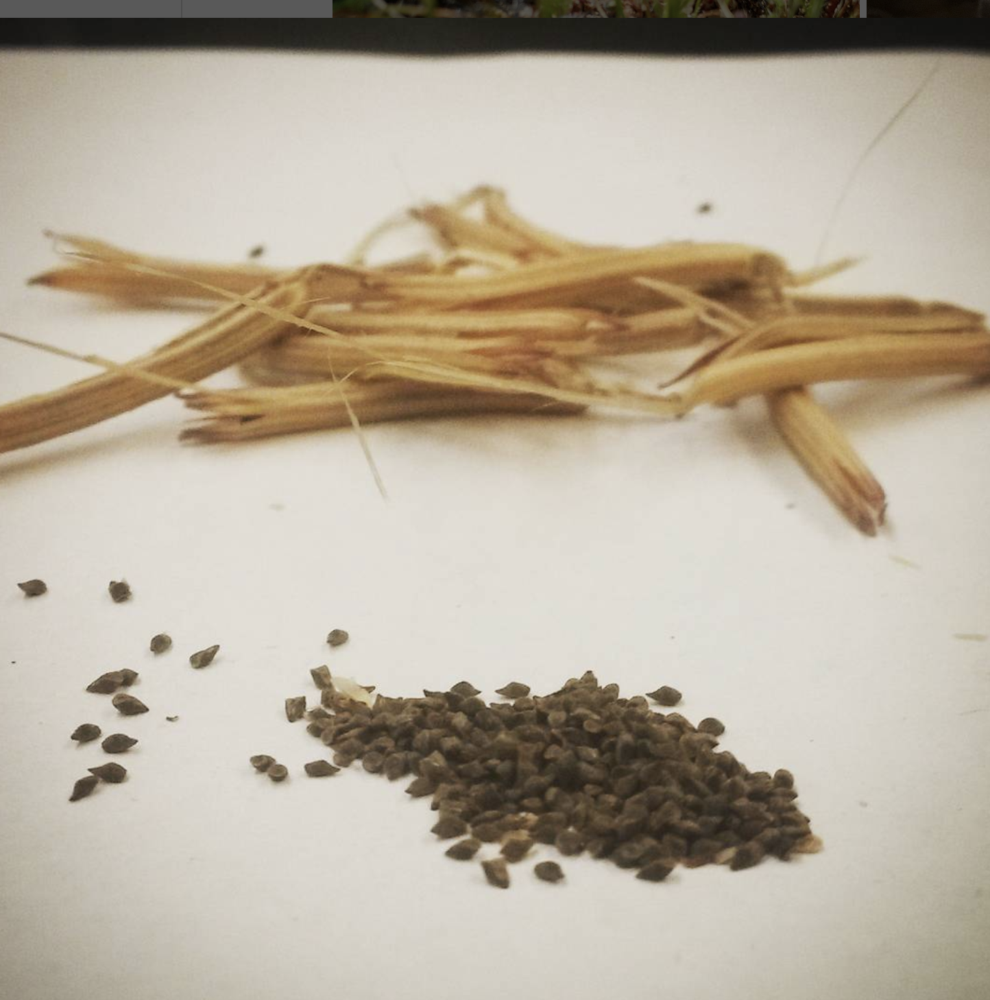

Motivating Scenario:
You are beginning to think about statistical models, and want to use something you understand well to ramp you up to more complex models.
Learning Goals: By the end of this subchapter, you should be able to:
Understand the mean as a linear model.
Recognize that modeling a variable with just its mean is fitting a simple linear model with no predictors.
Interpret residuals in a simple model.
Define and calculate residuals: the difference between observed values and model predictions.
Understand that the mean minimizes the sum of squared residuals.
And more importantly, what the sentence above means.
Use R to explore and visualize residuals.
Fit a mean-only model using lm().
Use augment() to extract fitted values and residuals.
The mean again?
“But we already had a section on the mean, and besides I’ve known what a mean was for years. Why another section on this?”
You, probably.
We are beginning our tour of interpreting linear models with the mean. We start with the mean, not because I doubt that you understand what a mean and variance are — I know that you know how to calculate the mean (\(\overline{y} = \frac{\sum y_i}{n}\)) and the variance (\(s^2 = \frac{\sum (y_i - \overline{y})^2}{n-1}\)). Instead, we are starting here because your solid understanding of these concepts will help you better understand linear models.
In a simple linear model with no predictors, the intercept is the mean and the only other term is the residual variation. So we predict the \(i^{th}\) individual’s value of the response variable to be:
\[\hat{y}_i = b_0\]
Where \(b_0\) is the intercept (i.e. the sample mean). In reality, of course, observations rarely match prediction perfectly. So an individual \(i\)’s actual value, \(y_i\) is its predicted value plus the difference between its observed and predicted value \(e_i\) (aka the residual).
In R you build linear models with the lm() syntax: lm(response ~ explanatory1 + explanatory2 + ..., data = data_set). In a simple model with no predictors you type: lm(response ~ 1, data = data_set).
So to model the proportion of hybrid seed in GC with no explanatory variables, type:

Figure 1: A bunch of Clarkia seeds. How many do you think are hybrids?
The output gives us the estimated intercept — which, in this case with no predictors, is simply the mean (see above). The code below verifies this (except that R provides a different number of digits).
Interpretation This means that we model the \(i^{th}\) individual’s proportion of hybrid seed as the sample mean, 0.1506,
\[\hat{Y}_i = 0.1506\]
and understand that its value will deviate from the sample mean by some amount, \(e_i\).
\[Y_i = 0.1506 + e_i\]
Residuals
Recall that the residual \(e_i\) is the difference between a data point and its value predicted from a model.
What is \(e_i\) in the math above? It is the residual the distance between the predicted value of the \(i^{th}\) observation in a linear model, \(\hat{y}_i\), and its actual value \(y_i\). Hovering over a point in Figure 2 reveals its residual value.
Code
library(plotly)prop_hybrid_plot <- gc_rils |>filter(!is.na(prop_hybrid)) |>mutate(i =1:n(),e_i = prop_hybrid -mean(prop_hybrid),e_i =round(e_i, digits =3),y_hat_i =round(mean(prop_hybrid),digits =3),y_i =round(prop_hybrid, digits =3)) |>ggplot(aes(x = i, y = y_i, y_hat_i = y_hat_i, e_i = e_i, color = i==3))+geom_point(size =4, alpha = .6)+scale_color_manual(values =c("black","darkgreen"))+geom_hline(yintercept =summarise(gc_rils,mean(prop_hybrid)) |>pull(),linetype ="dashed", color ="red", size =2)+labs(y ="Proportion hybrid", title ="This plot is interactive!! Hover over a point to see its residual")+theme(legend.position ="none")ggplotly(prop_hybrid_plot)
Figure 2: An interactive plot showing the proportion of hybrid seeds for eachClarkia xantiana subspecies parviflorarecombinant inbred line (RIL) planted at GC. Each point represents a line’s observed proportion hybrid seed, and the dashed red line shows the sample mean across all lines. Hovering over a point reveals its residual — the difference between the observed value and the mean. Individual 3 is shown in green as an example to focus on.
Worked example.
Take, for example, individual 3 (\(i = 3\), green point in the plot above), where 1/4 of its seeds are hybrids:
Its observed value, \(y_i\), is the proportion of its seeds that are hybrids, which is 0.25.
Its predicted value, \(\hat{y}_i\), is the proportion of all seeds that are hybrids (dashed red line), which is 0.151.
Its residual value, \(e_i = y_i - \hat{y}_i\), is the difference between the proportion of its seeds that are hybrids and proportion of all seeds that are hybrids, which is \(0.250 -0.151 = 0.099\). Scroll over the third data point in Figure 2 to verify this.
Use augment() to see residuals (and more!)
You can use the augment() function in the broom package to see predictions and residuals. The code to the right uses this capability to calculate the sum of squared residuals, while the code below shows (some of) the output from augment().
library(broom)lm(prop_hybrid ~1, data = gc_rils) |>augment() |>select(prop_hybrid, .fitted, .resid)
Calculating \(\text{SS}_\text{residual}\) from augment() output
You can use the output of augment() to calculate the sum of squared residuals by taking residuals (from .resid), squaring them, and then summing them, as shown below:
library(broom)lm(prop_hybrid ~1, data = gc_rils) |>augment() |>mutate(sq_resid=.resid^2)|>summarise(SS=sum(sq_resid))
# A tibble: 1 × 1
SS
<dbl>
1 5.62
The mean minimizes \(\text{SS}_\text{residual}\)
You already know the formula for the mean. But let’s imagine you didn’t. What properties would you want a good summary of the center of the data to have? What criteria would you use to say one summary was the best? We have already discussed this at length, and concluded it depends on the shape of the data etc…
While you should consider the shape of our data when summarizing it, a common criterion of the “best” estimate is the one that minimizes the sum of squared residuals. Figure 3 shows that of all proposed means for the proportion of hybrid seeds set at GC, the arithmetic mean minimizes the sum of squared residuals. This is always the case!
By looping over many proposed means (\(0\) to \(0.3\)), the plot below illustrates that the arithmetic mean minimizes the sum of squared residuals: The sum of squared residuals for a given proposed mean is shown: In color on all three plots (yellow is a large sum of squared residuals, red is intermediate, and purple is low); Geometrically as the size of the square in the center plot; On the y-axis of the right plot.
Figure 3: The mean minimizes the sum of squared residuals: The left panel shows the observed data points connected to proposed means (shown as a horizontal line), with colors indicating how much the sum of squared residuals differ from the minimum sum of squared residuals. The center panel visualizes the total squared error geometrically. The right panel shows the sum of squared residuals as a function of proposed mean values, with the current proposed mean highlighted with a point. The proposed value that minimizes the sum of squared residuals equals the arithmetic mean.
OPTIONAL EXTRA LEARNING
Optional / advanced reading:
Above, I showed that for our case study, the arithmetic mean minimizes the sum of squared residuals, and then I asserted that this is always the case. For those of you who enjoy calculus and want a formal proof—rather than a professor saying “trust me”—I’ve provided a link that shows this more generally.

![The animation shows three panels. In the left panel, observed data points are connected to a horizontal line representing the proposed mean, colored by the difference in the sum of squared residuals from the minimum. The center panel shows a square whose area reflects the total sum of squared residuals. The right panel plots the sum of squared residuals against proposed mean values, with a moving point indicating the current proposed mean. The animation illustrates that the mean is the value that minimizes the sums of squared residuals.](../../figs/summarizing_data/linear_models/mean_combined.gif)